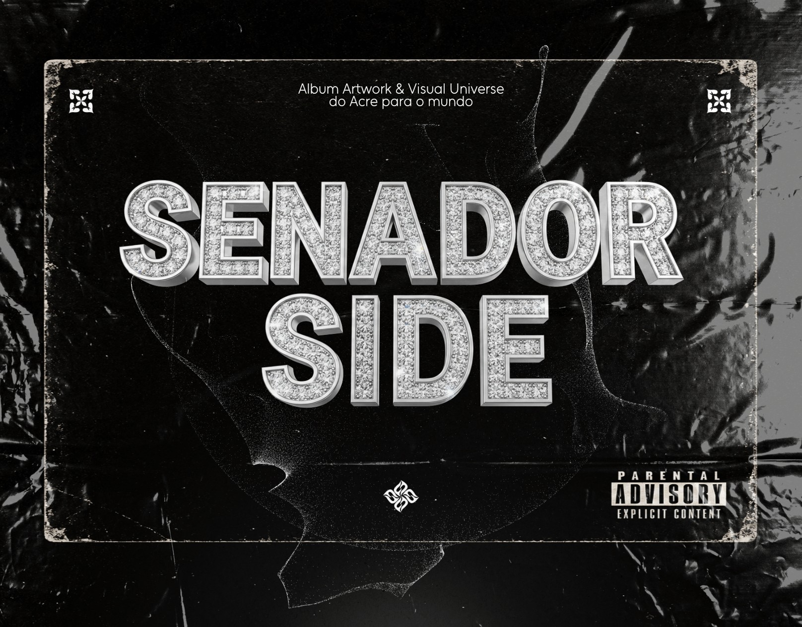

Intenção visual
Construir uma apresentação com personalidade, em que as escolhas estéticas trabalham a favor da ideia central.

FELPDESIGNER ← Voltar ao portfólioFelpdesigner / Selected case 001
Um projeto musical desenvolvido a partir de capa de álbum, identidade visual e direção de arte. O estudo reúne a peça principal e apresenta o projeto como um sistema visual — com foco em conceito, presença e consistência.

01 / OVERVIEW
A capa funciona como ponto de entrada para o universo visual do projeto. A direção de arte organiza a primeira impressão e dá unidade à apresentação, conectando a peça principal a uma assinatura visual reconhecível.
Construir uma apresentação com personalidade, em que as escolhas estéticas trabalham a favor da ideia central.
Tratar a capa como parte de uma linguagem visual, e não apenas como uma imagem isolada.
Manter uma linha visual consistente entre o conceito, a peça principal e a forma de apresentar o projeto.
02 / VISUAL LANGUAGE
A leitura do projeto é organizada em torno da capa e da sua presença visual. O restante do estudo usa uma interface escura, tipografia precisa e marcações técnicas para deixar a arte em primeiro plano sem competir com ela.
Senador Side / Visual signature
Creative direction / 001
Seu projeto pode ser o próximo
Tem uma marca, artista ou ideia que precisa de uma linguagem visual mais forte? Vamos conversar sobre o objetivo do projeto e encontrar uma direção adequada.
Conversar sobre meu projeto ↗